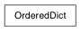

Dictionary that remembers insertion order
If not specified, the value defaults to None.
od.iteritems -> an iterator over the (key, value) pairs in od
od.itervalues -> an iterator over the values in od
value. If key is not found, d is returned if given, otherwise KeyError is raised.
Pairs are returned in LIFO order if last is true or FIFO order if false.
If E present and has a .keys() method, does: for k in E: D[k] = E[k] If E present and lacks .keys() method, does: for (k, v) in E: D[k] = v In either case, this is followed by: for k, v in F.items(): D[k] = v